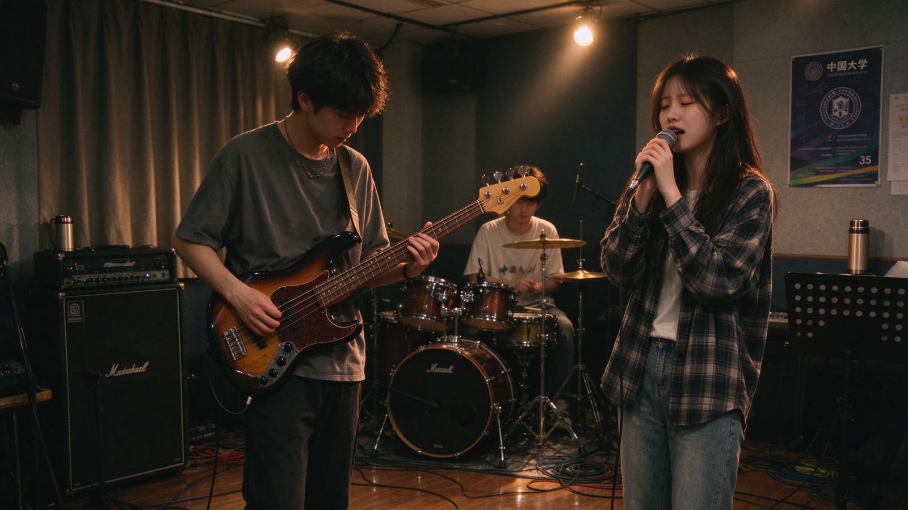

活动介绍 · 2026 春季
春季第一次全员合排
3 月 11 日晚上，艺术楼排练厅 3，四十个人第一次在同一间屋子里，把这一学期要演的四首歌从头过了一遍。这场合排也对外开放，想来看看社团怎么排练的同学可以旁听。
- 时间
- 2026 年 3 月 11 日（周三）19:00—21:30
- 地点
- 艺术楼 排练厅 3（三层最里侧，进门右手边第二间）
- 对象
- 全体社员；对外开放 12 个旁听名额
- 准备
- 自带琴，或提前一天在社团群登记借用社琴
当晚流程
基本功。节拍器调到 60，右手食指与中指交替拨弦，先弹一根空弦，再走两个八度的音阶。这段时间不弹歌。
声部分组。贝斯手和鼓手单独对拍子，其余声部各自练自己的段落；教学组会逐个听一遍新人的右手。
全员合排。《低频》《深夜巴士》《三月》《回声》四首，每首先慢速走一遍，再按演出速度过一遍。
收尾。定下这一周的练习目标，登记归还社琴，把排练厅的音箱断电、椅子归位。
这次合排是春季学期的第一次全员到场。前两次活动分别是新成员见面会和基础教学公开课，都在博学楼 B201 举行，主要讲社团怎么运转、琴怎么借、基本功从哪里开始。到了 3 月 11 日，人才真正坐到一起，开始合一首完整的歌。
合排的第一遍通常不好听：贝斯比鼓慢半拍，吉他和主唱互相等对方，副歌的进点总要试三次。教学组不打断，只在每首结束后说一句「哪一拍空了」。第二遍会明显不一样——这也是我们把慢速过一遍放在前面的原因，先让所有人听见问题，再一起修。
旁听的同学不需要带任何东西，坐在排练厅靠门的两排椅子上就行。中间休息时可以随便问问题，也可以登记借用一把琴，跟着下一周的例行排练走一遍。

提前到场建议 18:50 前到，留十分钟调音和搬椅子。
设备排练厅的音箱与调音台由器材组负责，不要自行改接线。
饮品排练厅内只放带盖的水杯，其他饮料请放在门口。
结束21:30 前离场，最后离开的人负责关灯和锁门。